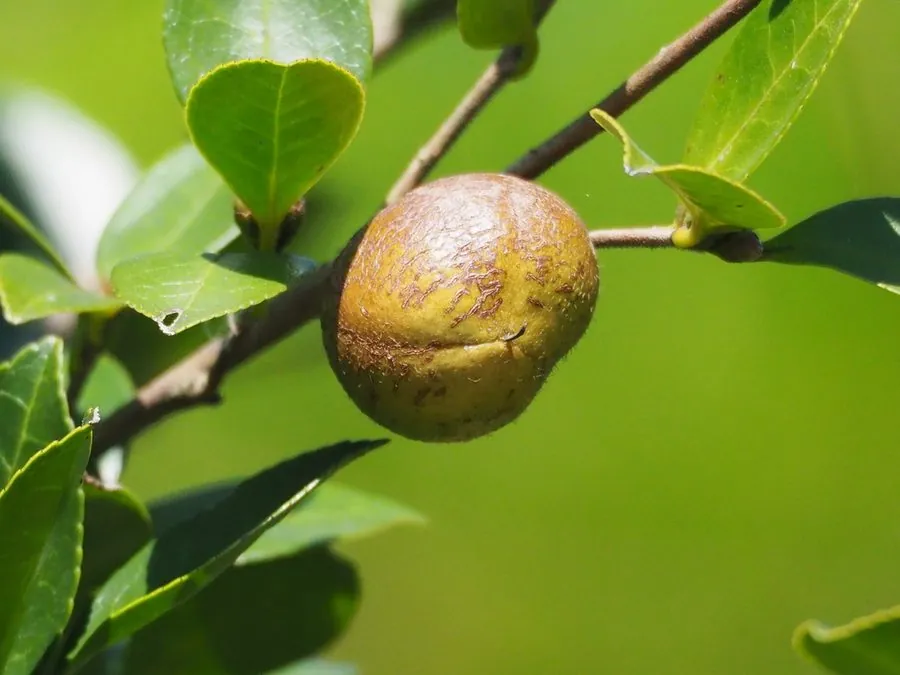

灌木与花木 · 植物界
油茶 Camellia oleifera

山茶科常绿灌木或小乔木，秋冬开白花，果实可榨取茶油，是中国南方重要的木本油料树种，栽培历史悠久。
- 分类
- 门被子植物门纲木兰纲目杜鹃花目科山茶科属山茶属
- 栖息环境
- 低山丘陵与缓坡林地，喜温暖湿润和酸性土
- 地理分布
- 中国长江流域及以南各地，湖南、江西、广西为主产区
- 保护级别
- 暂无评估；中国未列入国家重点保护野生植物名录
物种志
油茶为山茶科山茶属常绿灌木或小乔木，高 2–6 米，树皮灰褐色，嫩枝被毛。叶互生，椭圆形至倒卵形，革质，边缘具细锯齿。花单生或簇生于枝顶，花瓣 5–7 枚，白色，花心黄色，花期 10–12 月；果实为蒴果，球形或扁球形，成熟时黄褐色，内含 1–4 粒种子，果期翌年 9–10 月。
油茶原产中国南方，长江流域及以南各地广泛栽培，是中国特有的木本油料树种，栽培历史超过两千年。它喜温暖湿润、阳光充足的环境，适宜疏松肥沃、排水良好的酸性红壤。种子含油率约 30%，榨出的茶油色清味香，可供食用、制皂和润发；茶粕可作农药与肥料。油茶花期长，也是冬季重要的蜜源植物。
形态与习性
- 株高2–6 米，树皮灰褐色
- 花期10–12 月，花白色
- 果期翌年 9–10 月，蒴果含 1–4 粒种子
- 光照喜光，幼树稍耐阴
- 水分喜湿润，忌积水
- 土壤疏松肥沃、排水良好的酸性红壤
- 主要用途木本油料，茶油食用与工业用
趣味知识
- 油茶是中国特有的木本油料树种，栽培历史超过两千年。
- 茶油色清味香，被誉为“东方橄榄油”。
- 油茶秋冬开花，是冬季重要的蜜源植物。
- 茶粕含茶皂素，可作农药与肥料，也可用于清塘。